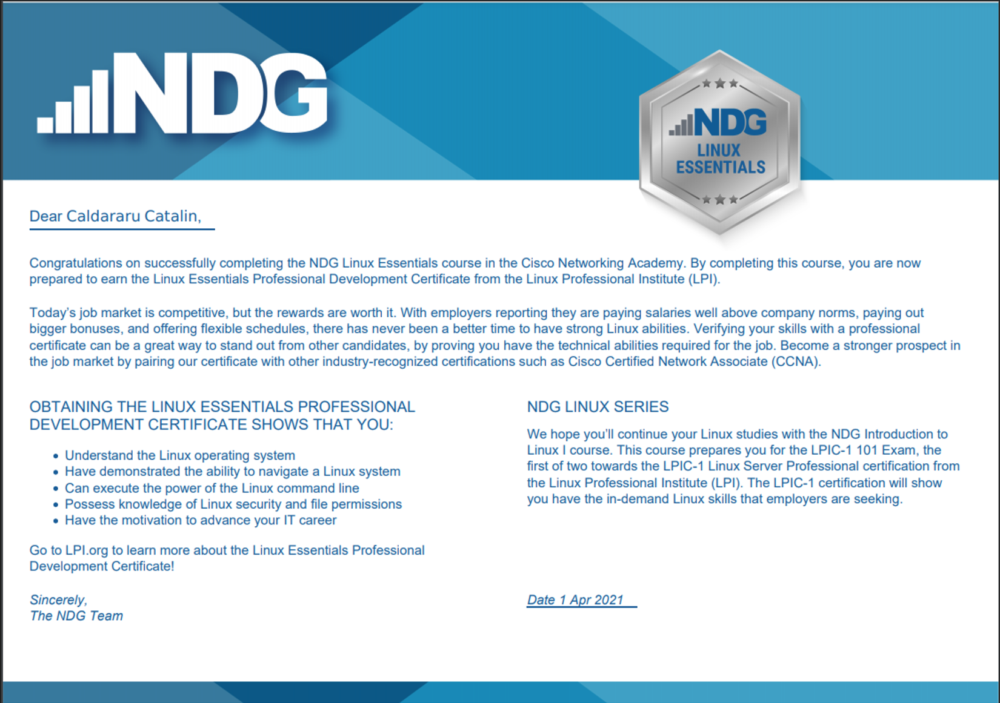
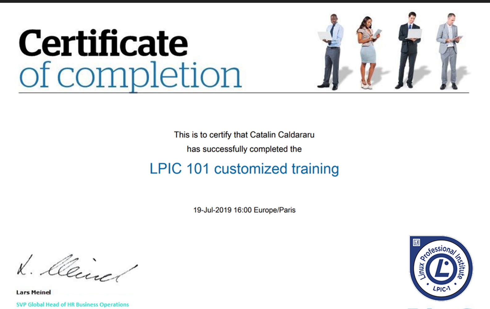
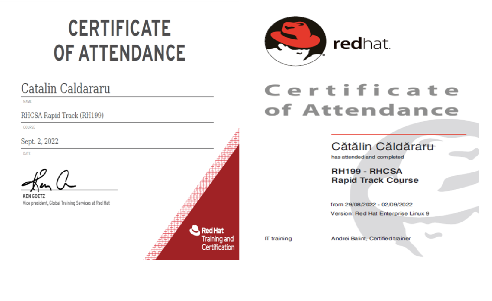
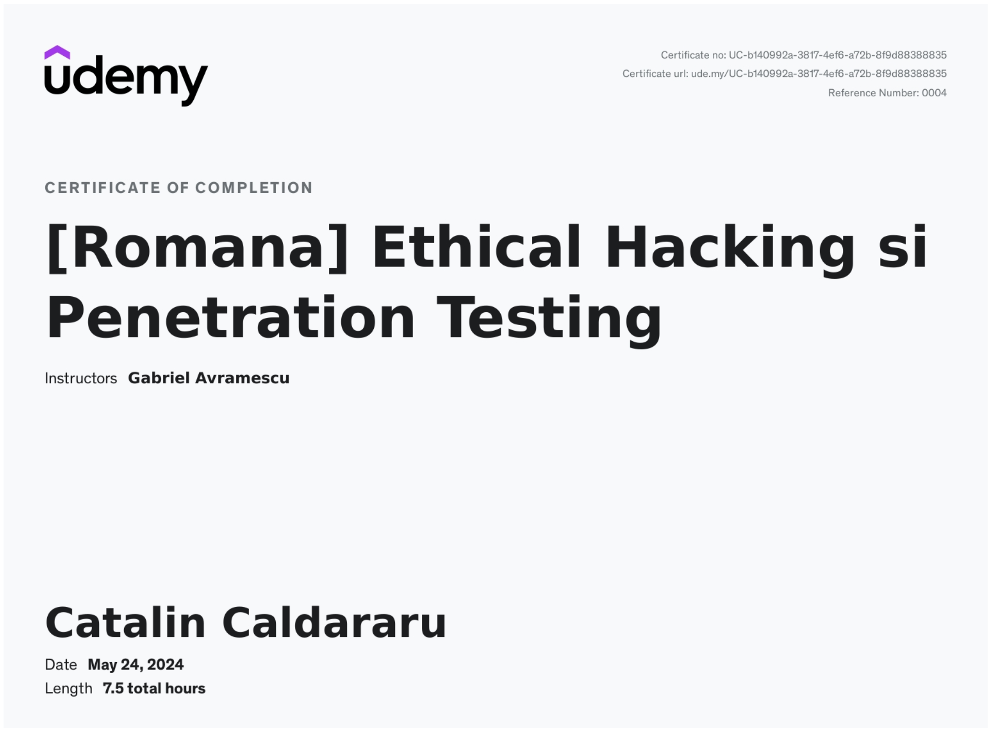
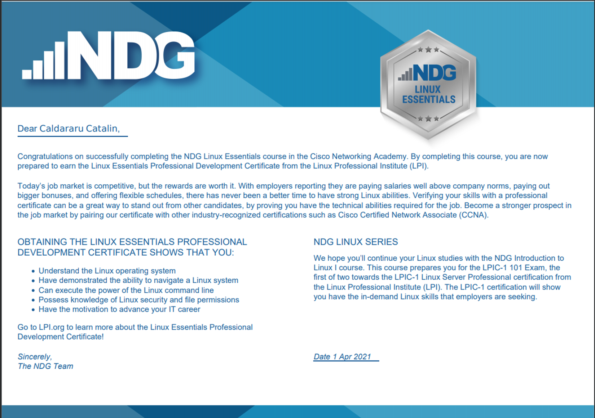
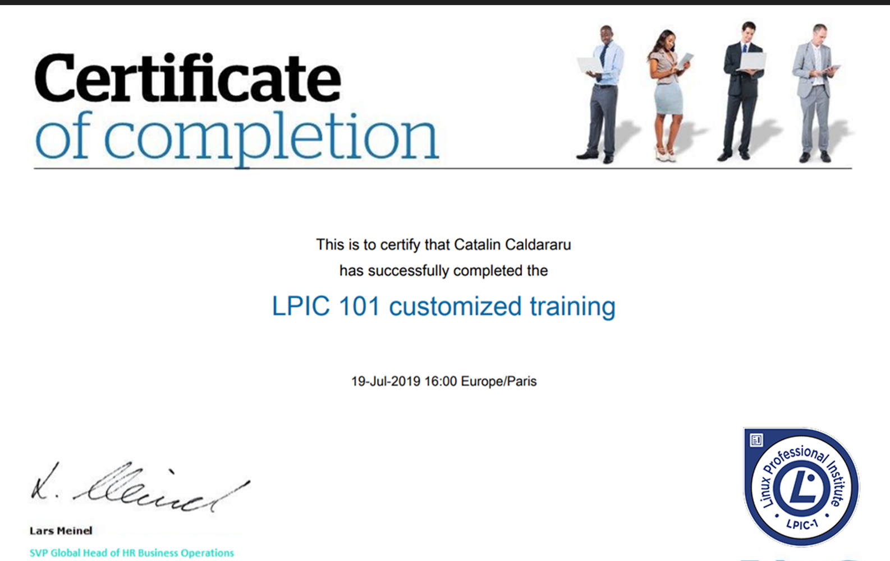
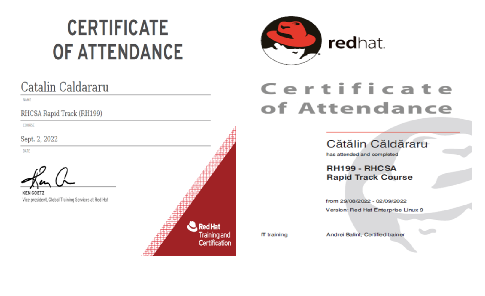
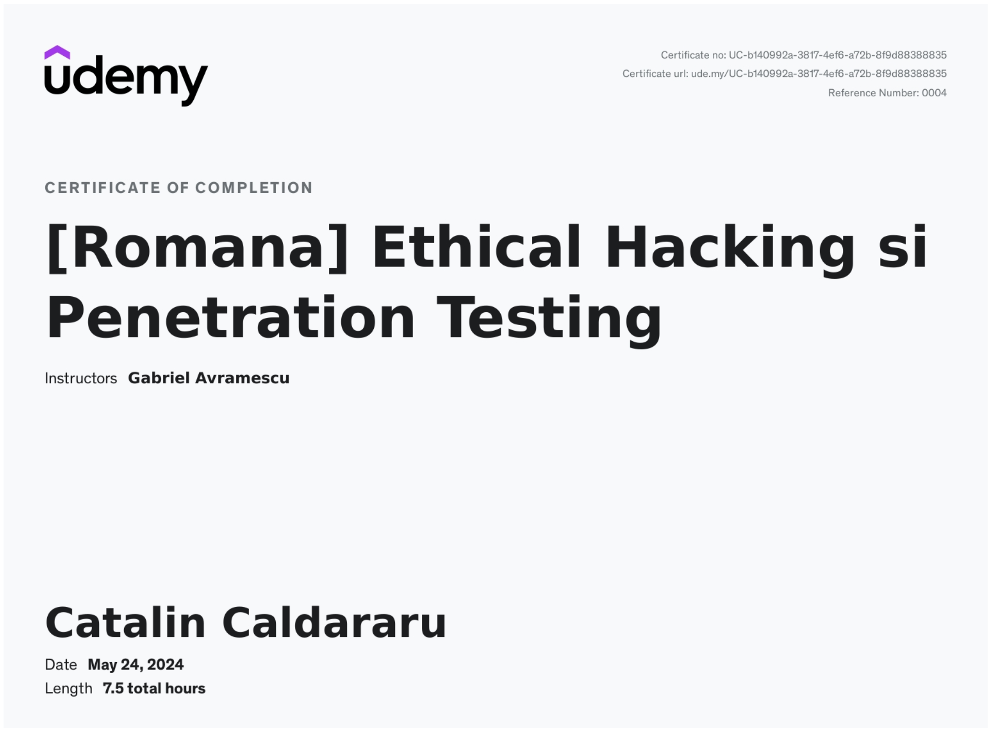
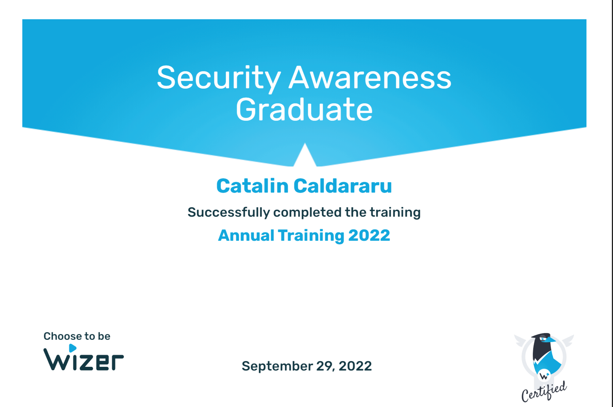
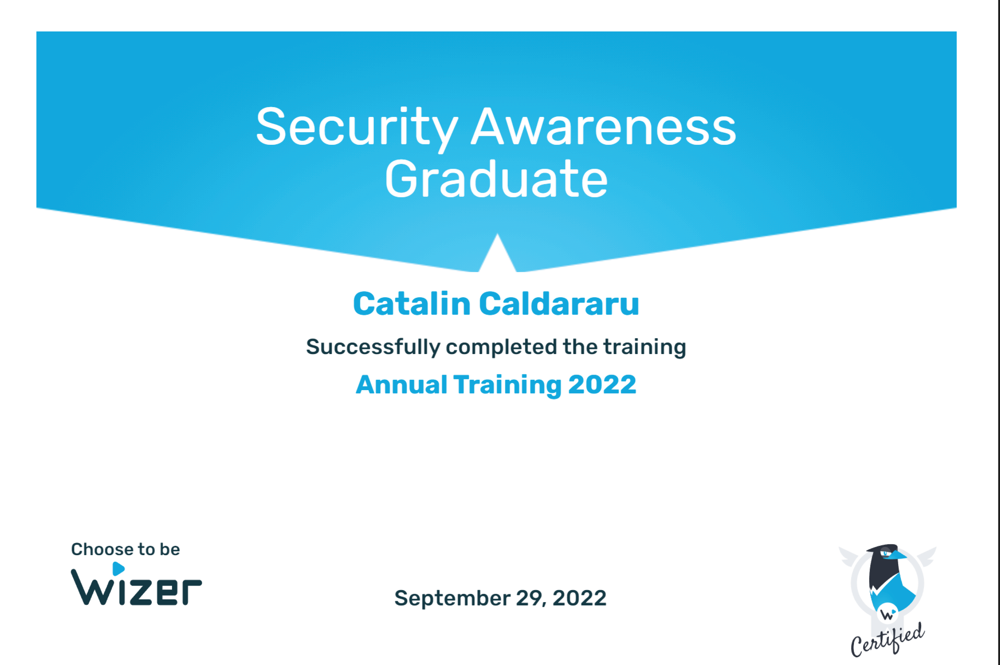

📚 DevOps Certifications and Achievements
Welcome! Below is a collection of my DevOps, Cloud, Linux, and Security certifications.
🏅 Certifications Gallery
🛠️ Key Skills
- Ansible Automation
- CI/CD Pipelines (Jenkins, GitHub Actions)
- Containerization (Docker, Kubernetes)
- Cloud Computing (AWS, Google Cloud)
- Infrastructure as Code (Terraform, CloudFormation)
- Linux Administration and Security
- IT Security and Awareness
🚀 Next Goals
- Achieve Certified Kubernetes Administrator (CKA)
- Advance towards AWS Certified Solutions Architect
- Strengthen DevSecOps and Cloud Security skills

 









 
